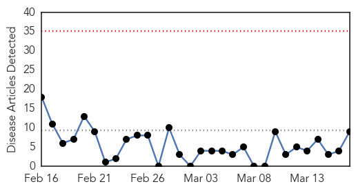
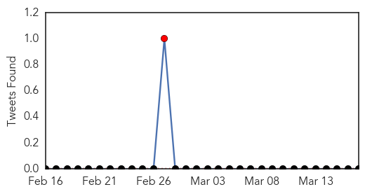

Influenza
30-Day Web Trend
0 alerts, 0 warnings

30-Day Twitter Trend
0 alerts, 0 warnings

Article Locations

Article Confidences

Top Articles:
- 0.998
- Study shows only 23% of seasonal and pandemic flu caused symptoms
- 0.995
- Symptoms Just Tip of Flu Iceberg
- 0.989
- Canberrans urged to get flu vaccination before winter
- 0.984
- Most people with flu have no symptoms
- 0.982
- Cambodian girl dies of bird flu: WHO
- 0.964
- Cambodian girl dies of bird flu: WHO
- 0.950
- Virginia flu season winding down
- 0.913
- Investigation of Harford gastroenteritis outbreak continues
- 0.900
- Health Ministry gets ready for Haj
Top Tweets:
-
No tweets found for Mar 17, 2014
Dengue Fever
30-Day Web Trend
1 alerts, 0 warnings

30-Day Twitter Trend
2 alerts, 0 warnings

Article Locations

Article Confidences

Top Articles:
- 0.998
- New Zealand health officials warn travelers of dengue risk in the Pacific
- 0.974
- Dengue fever bites in Auckland
- 0.961
- NZ tourists contract dengue fever in Fiji
- 0.879
- Fiji: Dengue Outbreak - Mar 2014
- 0.865
- Fiji health ministry praises dengue clean-up efforts while outbreak continues
- 0.802
- But for lack of space, Siolim PHC in good health
- 0.779
- Fiji dengue outbreak expected to affect 24,000 people - Fiji
- 0.774
- Asia Pacific Region: Weekly Regional Humanitarian Snapshot 11 - 17 March 2014 - Vanuatu
- 0.569
- Wolves, chills and pythons: Next wave of Lowcountry invasive species might not play so nice
Top Tweets:
-
No tweets found for Mar 17, 2014